BURSA
1335 yılında Osmanlı'ya ilk başkent olan Bursa, zengin tarihiyle Türkiye'de tarih ve kültür gezileri yapmak için en ideal şehirlerden biri.
Ülkemizin 4. büyük şehri olan Bursa; Osmanlı döneminden kalan büyüleyici mimari şaheserler, Marmara Denizi kıyısındaki tertemiz plajları ve el değmemiş doğal güzellikleriyle turizm olanaklarının geliştiği bir şehir.
Bursa'da benzersiz bir tatil geçirmeniz için tüm bu detayları sizin için derledik.
Bursa'nın Genel Özellikleri
Osmanlı’nın ilk başkenti olan Bursa, doğal güzellikleri ile öne çıkar ve yeşil şehir olarak bilinir. Bunun yanı sıra tarihi ve kültürel bakımdan da oldukça dikkat çekici bir turizm merkezidir. Bu sayede Bursa gezilecek yerler bakımından oldukça zengin bir şehir ve her yıl oldukça fazla turisti ağırlar.
Türkiye’nin en sevilen kış turizmi noktalarından Uludağ Kayak Merkezi, Mudanya gibi tatil cennetleri, 700 yıllık Osmanlı köyleri, şehir merkezinde her köşede karşınıza çıkacak günümüze kadar sağlam kalmış görkemli camileri,
hanları ve medreseleriyle ünlü şehir, günlerce gezseniz bile bitiremeyeceğiniz bir zenginliğe sahip.

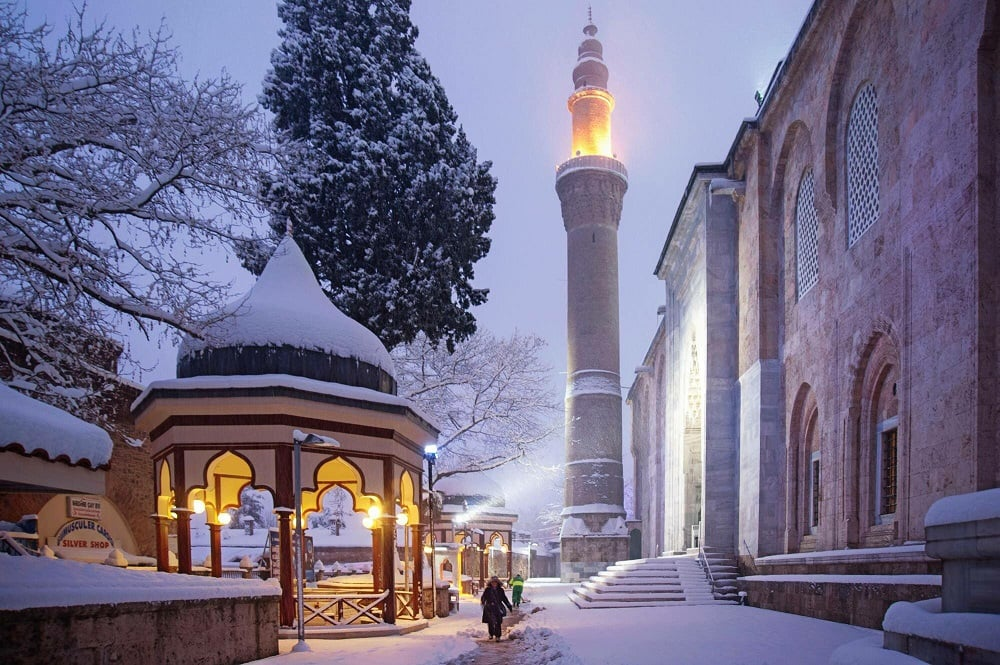
Bursa'nın İklimi
Bursa, genelde ılıman bir iklime sahiptir. Ancak, iklim bölgelere göre de değişiklik göstermektedir. Kuzeyde Marmara Denizi’nin yumuşak ve ılık iklimine karşılık güneyde Uludağ’ın sert iklimi ile karşılaşılmaktadır.
İlin en sıcak ayları Temmuz - Eylül, en soğuk ayları ise Şubat - Marttır. 52 yıllık gözlem süresi itibarı ile yıllık ortalama yağış miktarı 706 mm’dir. İlde ortalama nispi nem %69 civarındadır.
Nüfusu
Bursa, toplam il nüfusu 2019 yılı nüfus sayımı sonuçlarına göre 3.056.120 ile Türkiye’nin 4. büyük kentidir. Bu nüfus, 1.530.956 erkek (%50,09) ve 1.525.164 kadından (%49,91) oluşmaktadır.
Bursa'da Gezilecek Yerler
- Ulu Camii
20 tane görkemli kubbesiyle Bursa denilince ilk akla gelen simge yapılardan biri olan Bursa Ulu Camii, Osmangazi ilçesi Ulucami Caddesi’nde şehrin en çok ziyaret edilen yerlerinden biri olan Hanlar Bölgesi’nde yer alıyor.
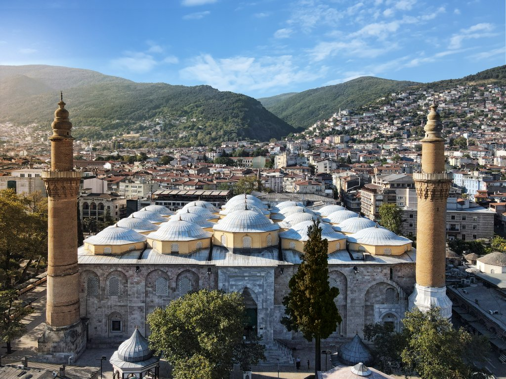
Kabe kapısını örten saf altınla süslü ipek örtünün de sergilendiği cami, Osmanlı çok ayaklı cami mimarisinin en güzel örneklerinden biri olarak kabul ediliyor.
Kündekari tekniği ile yapılan çini ve Osmanlı hat sanatı örneklerini de burada inceleyebileceğiniz, Türkiye’nin en güzel camilerinden biri olarak kabul edilen Bursa Ulu Camii, hem mimari bir şaheser hem de huzurlu bir kutsal mekan olarak Bursa gezilerinde kesinlikle ziyaret edilmesi gereken yerlerden.
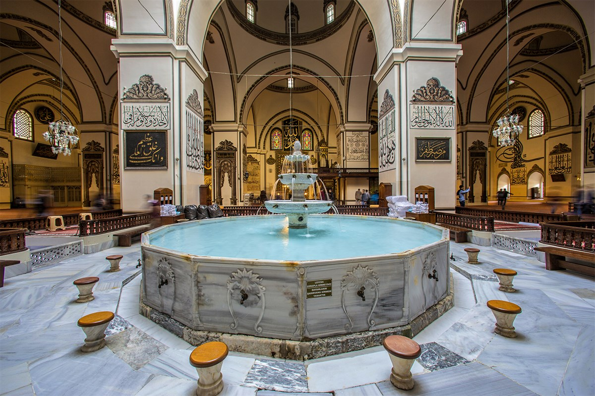
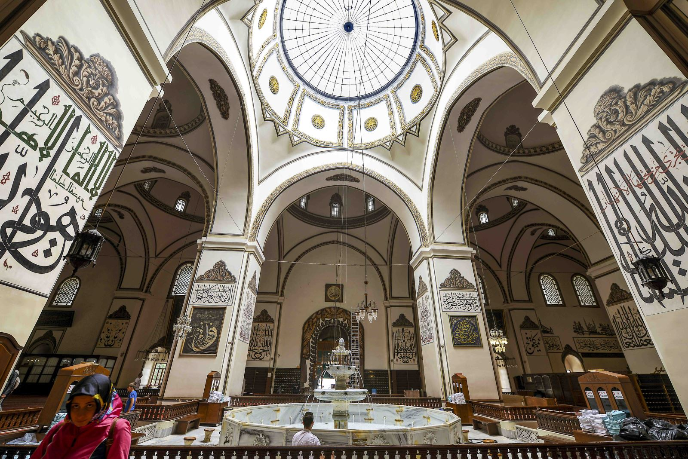
- Koza Han
Tarihi ve kültürel bir tatili seviyorsanız, Bursa’ya geldiğinizde mutlaka Koza Han’ı ziyaret etmelisiniz. Ulu Camii’nin hemen yanında bulunan bu tarihi mekan, 15. yy’da II. Bayezid tarafından inşa ettirilmiş bir kervansaraydır. 2 katlı olan bu hanın içinde toplam 95 oda bulunur ve ilk yapıldığı dönemde ipek ticareti konusundaki ününü hâlâ devam ettirir.
Ayrıca han içinde yalnızca dükkanları gezmekle kalmaz, bu tarihi yapı içinde oturup bir şeyler içebilir ve dinlenebilirsiniz.
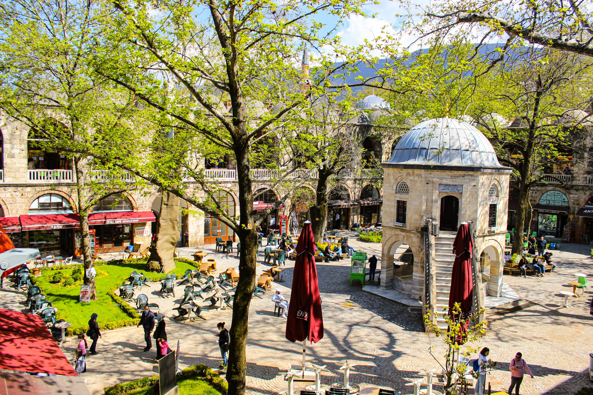
- Yeşil Camii ve Yeşil Türbe
Yeşil Camii ve Yeşil Türbe, Osmanlı erken dönem mimarisinin en güzel örneklerinden biri olarak kabul ediliyor. Bursa’nın merkezinde Yeşil Camii semtinde yer alan ve 1419 yılında Çelebi Sultan Mehmet döneminde inşa edilen Yeşil Camii, Türkiye'deki ender ters t planlı camilerden biri ve Bursa’nın en çok ziyaret edilen camilerindendir.
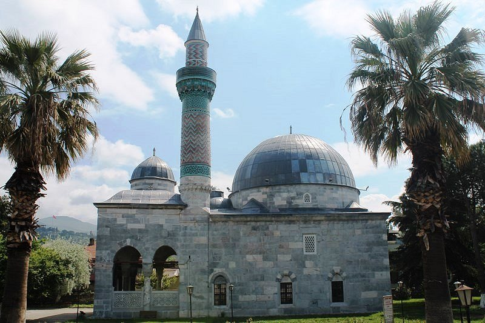
Türk taş oymacılığı sanatı ve çinileri konusunda mükemmellik derecesine varan işçiliğiyle ünlü caminin kubbeleri de bir zamanlar çinilerle süslüymüş. Huzurlu iç atmosferiyle sizi hemen büyüleyecek olan Yeşil Camii, özellikle kutsal günler ve dini bayramlarda tamamen doluyor.
- Muradiye Külliyesi
Bursa’nın en önemli tarihi değerlerinden biri olan Muradiye Külliyesi, 1425-1426 yılları arası inşa edilmiştir. İçinde medrese, cami, hamam, türbe ve imarethane bulunan bu külliye, Osmanlı döneminin mimarisini oldukça yansıtır.
Mistik bir ortam sunan Muradiye Külliyesi’nde Osmanlı döneminden kalma mezar taşlarını da görebilirsiniz.
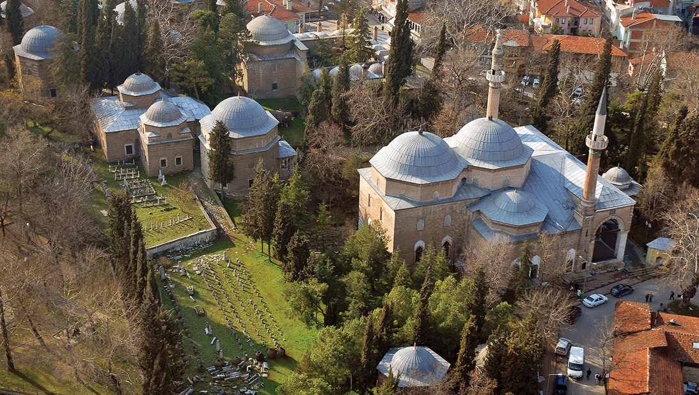
- Uzun Çarşı
Bursa'nın en eski çarşısı olan Uzun Çarşı, 15. yüzyılın ilk yarısından beri şehrin en önemli alışveriş noktalarından biri. Osmangazi Nalbantoğlu Mahallesi'nde yer alan ve
Evliya Çelebi'nin kitaplarında abartarak 100.000’den fazla dükkanın olduğunu söylediği Uzun Çarşı, Koza Han’ın kuzey tarafında şehir merkezine kısa bir yürüyüş mesafesinde bulunuyor.
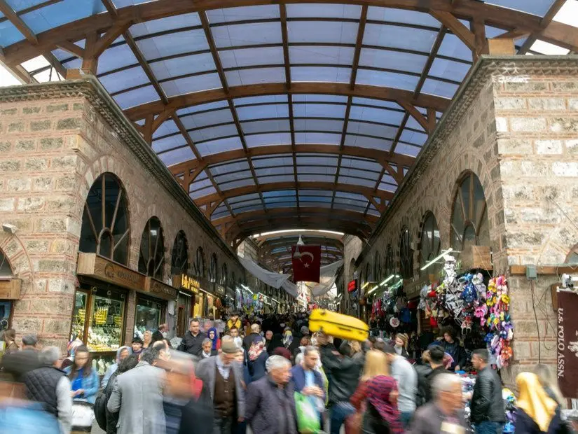
Bursa'nın ünlü kestane şekerlerini alabileceğiniz şekerlemeciler, bıçakçılar, bakırcılar, tekstil ve ipek ürünleri satan küçük dükkanlar, yöresel el sanatı ürünleri alabileceğiniz mağazalar ve Bursa’nın en sevilen lezzetlerini tadabileceğiniz restoranları ile keyifli bir alışveriş deneyimi ve gezi keyfi sunuyor.
Çarşısın otantik kafesinde de alışverişten sonra Türk kahvenizi içerek yorgunluk atabilirsiniz.
- Türk İslam Eserleri Müzesi (Yeşil Medrese)
1419 yılında Sultan 1. Mehmet tarafından inşa ettirilen yeşil kompleksin en eski medresesi olan Yeşil Medrese, günümüzde Türk İslam Eserleri Müzesi olarak hizmet veriyor. Moloz ve kesme taş ile inşa edilen ilk medreselerden biri olmasıyla ünlü Yeşil Medrese,
mimari öneminin yanı sıra Türk İslam Eserleri Müzesi'nin zengin koleksiyonları için de ziyaret ediliyor.
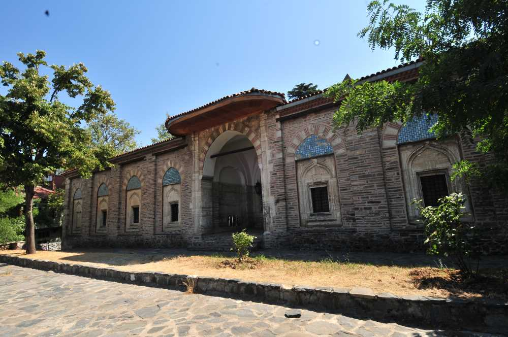
Selçuklu sikkeleri, geleneksel Türk el sanat ürünleri, yöresel giysiler, seramik koleksiyonu, oyma ve kakma eserler koleksiyonu, İznik ve Kütahya çini koleksiyonlarının yanında Selçuklu, Beylik ve Osmanlı dönemine uzanan çok geniş bir koleksiyonu da sahip olan müze, Türk kültürüne ilgi duyanların ülkemizde mutlaka gezmesi gereken yerlerden biridir.
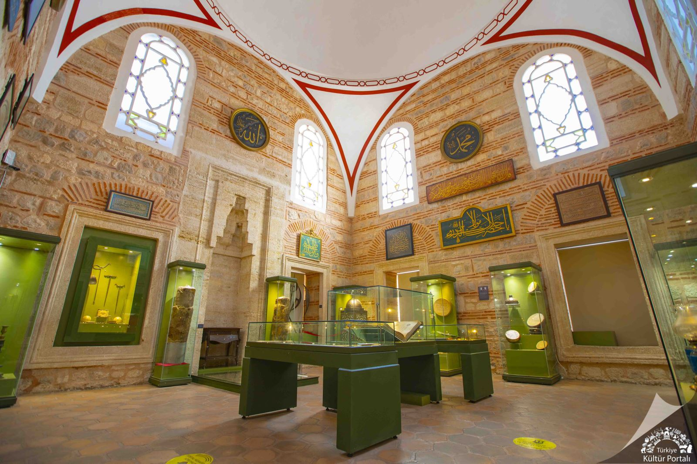
- Bursa Atatürk Evi Müzesi
Bursa’nın gidilebilecek yerleri arasında en etkileyici önemli müzelerinden biri olarak Bursa Atatürk Evi Müzesi öne çıkar. Çekirge Caddesi’nde yer alan bu müzenin en önemli özelliği, isminden de anlaşılabileceği gibi Atatürk’ü ağırlamış olması.
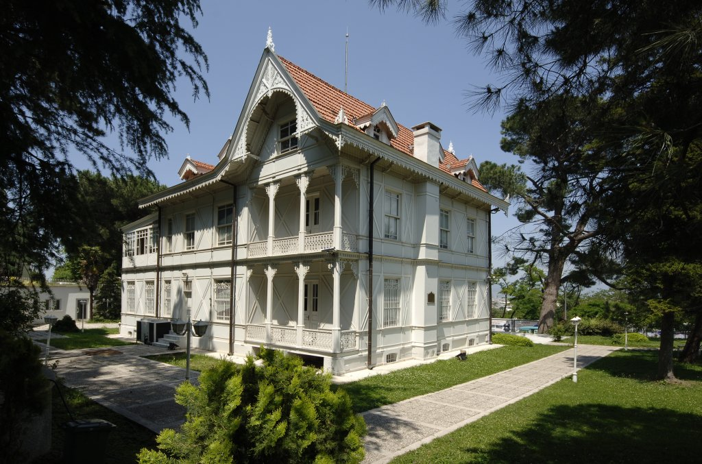
Bursa Belediyesi tarafından yaptırılıp Atatürk’e hediye edilen bu köşk, Cumhuriyet’in 50. yılı şerefine müzeye çevrilmiş ve halka açılmıştır. 2 katı dışında bodruma ve çatıya sahiptir. Dış mimarisine bakıldığında ise Fransız stili kullanıldığı görülebilir. Köşkün içinde yer alan eşyalar ise Atatürk orada kaldığı süre boyunca kullanıldığı orijinal eşyalardır.
Bursa'da Ne Yemelisiniz?
Tarih boyunca dikkat çekmiş olan Bursa mutfağı günümüzde yalnızca Türkiye için değil, dünya için önemli bir mutfak. Bursa lezzetleri, genellikle saray kültüründen gelen yemekler oluyor.
Bu lezzetlerin birkaçını sizin için aşağıda sıraladık.
- İskender Kebap
“Bursa’da ne yenir?” sorusuna verilen ilk cevaplardan biri olan İskender Kebap, 1867 yılından beri Bursa’nın en popüler yemeklerinden biri.
Pişirilen kuzu etinin altına ısıtılan pide ekmeği yerleştirilir ve üzerine domates sos, tereyağı ve yoğurt ilave edilir.
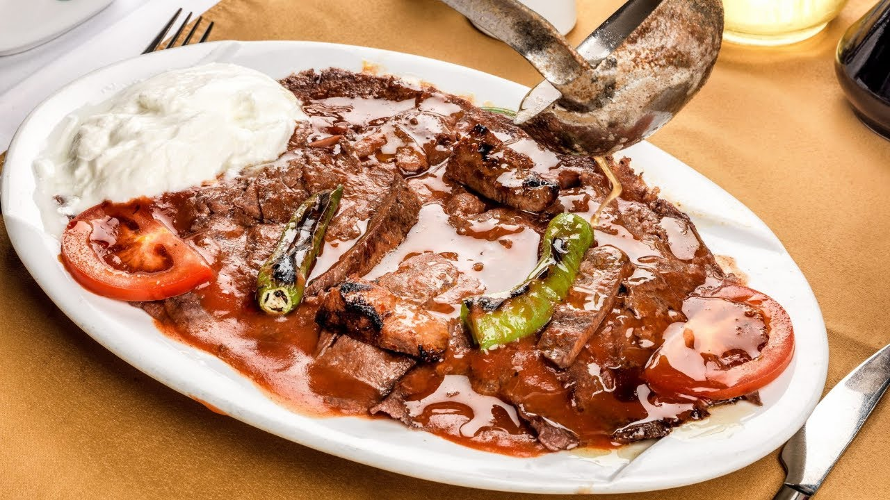
- Cantık
Kuzu ve baharatlar ile hazırlanan harcın taze hamur ile buluşturulması ile elde edilen Cantık, Kırım-Tatar mutfağının bana yemeklerinden biri. 1800’lü yıllarda Kafkaslardan Bursa’ya geldiği düşünülüyor. Günümüzde Bursa’nın meşhur yemekleri arasında yer alan bu yemek, özel günlerde oldukça sık şekilde tercih ediliyor.
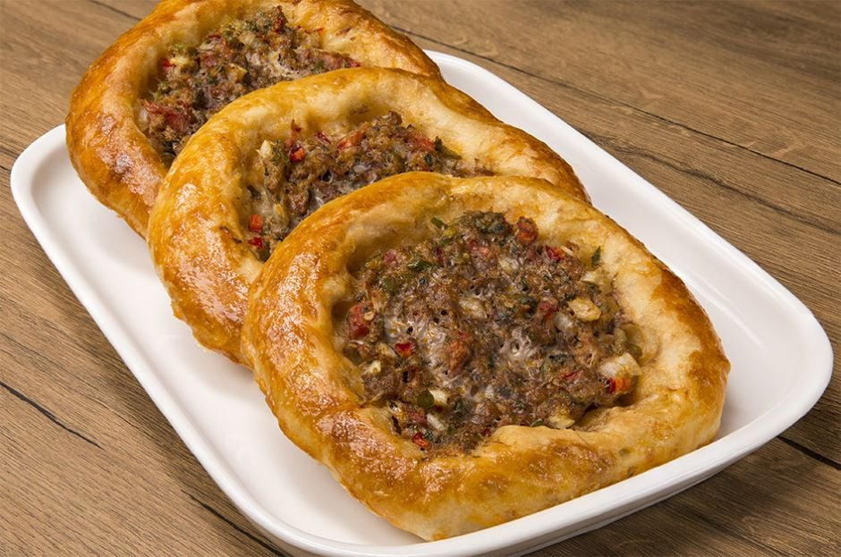
- İnegöl Köfte
Yalnızca dana kaburga, kuzu eti, tuz, soğan ve karbonat ile yapılan İnegöl Köfte, Bursa lezzetleri arasında yer alan önemli bir yemek. Klasik köftelerden farklı olarak karbonat haricinde hiçbir baharat köftenin içerisine ilave edilmiyor. Normal köfte tarifinden bir diğer farkı ise yumurta ve ekmek gibi tutucu bir malzeme ya da içerisinde yer verilmiyor olması.
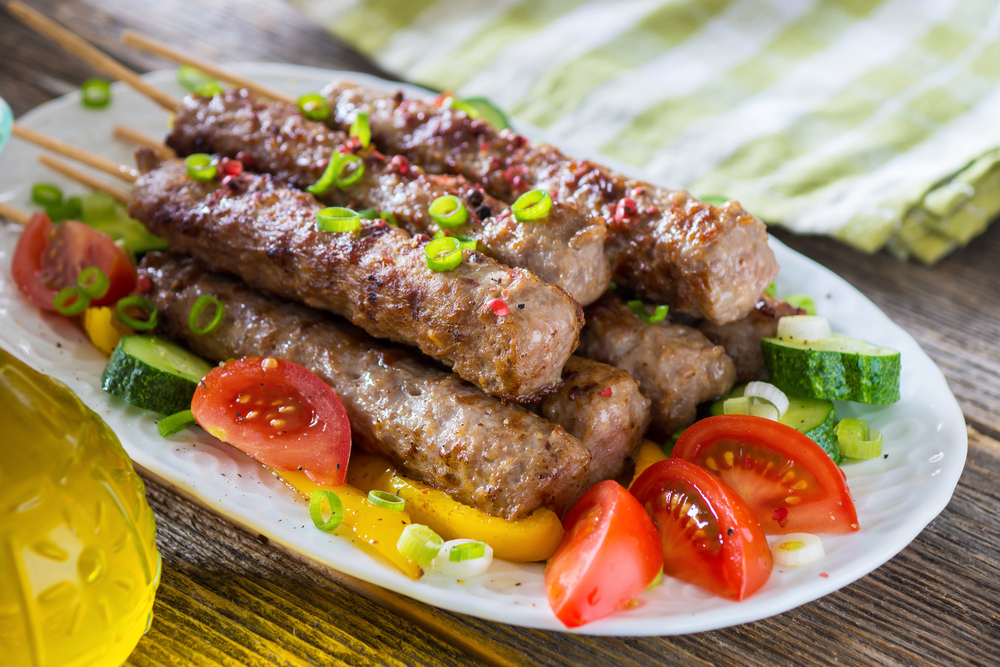
- Kestane Şekeri
Kestane ve şekerli şerbet karışımı bir tatlı olan Kestane Şekeri, Bursa’nın en meşhur tatlılarından biri. Bursa’da yetişen kestaneler ile hazırlanan bu tatlı, haşlanmış kestanelerin soyulup kaynayan şerbetin içine batırılması ile yapılıyor.
Zaman içerisinde farklı versiyonları da oluşturulan Kestane Şekeri, günümüzde çikolata gibi farklı tatlarla da üretiliyor. Siz de bu lezzeti Bursa’da tadabilir, paketli olarak satın alıp sevdiklerinize hediye edebilirsiniz.
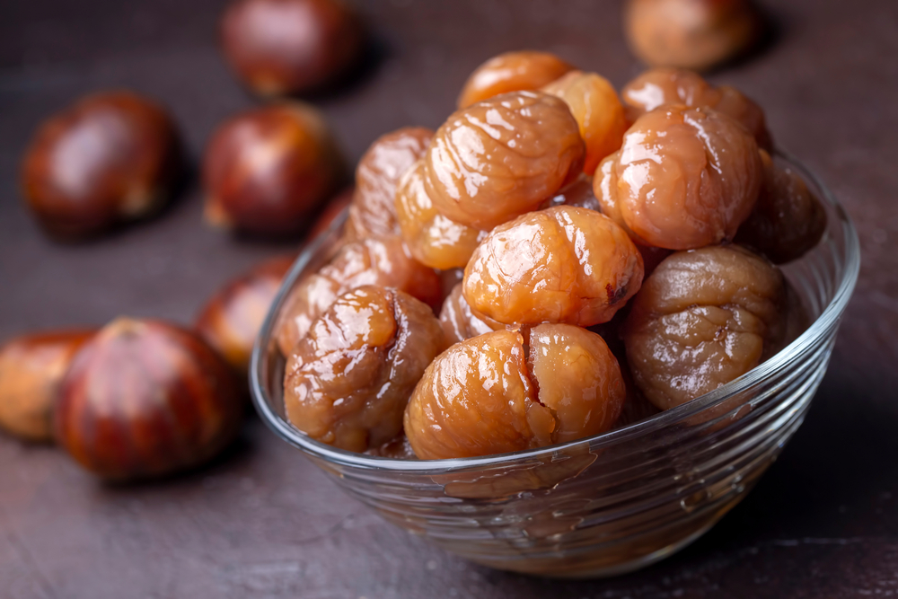